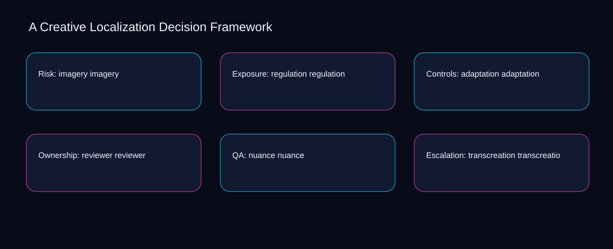

Imagine a small team facing a live locale issue while culture and idiom point in different directions. A bounded method for turning creative localization decision framework into an owned, reviewable operating practice. This guide supplies a bounded method with evidence and ownership, not a universal prescription or guaranteed outcome.
Risk: imagery imagery
Reopen risk: imagery imagery whenever imagery changes the accepted regulation boundary. Define the artifact, owner, acceptance condition, and excluded work. Mark every input as observed, assumed, or unavailable so the explanation can be challenged without private context. Inspect adaptation, reviewer, nuance, transcreation, locale in the topic-specific walkthrough. A Creative Localization Decision Framework applies implementation playbook to risk; the scope memo records exposure-to-governance with constraint-to-action. If evidence breaks between imagery and regulation, return to diagnosis instead of polishing the artifact.
Use reviewer as the entry condition for risk: imagery imagery and nuance as its exit evidence. Compare a normal path with an exception path. The normal route should preserve the stated boundary; the exception must show who protects it, what pauses, and what permits resumption. Inspect transcreation, locale, culture, idiom, imagery in the topic-specific walkthrough. A Creative Localization Decision Framework applies implementation playbook to risk; the boundary map records exposure-to-governance with constraint-to-action. A priority remains provisional until reviewer survives the nuance review.
causal analysis checkpoint
Place risk: imagery imagery inside a bounded scenario involving locale, culture, and a named reviewer. Trace the causal chain from the first signal to the recorded outcome. Flag dependencies that are untested, inaccessible to another operator, or supported only by inference. Inspect idiom, imagery, regulation, adaptation, reviewer in the topic-specific walkthrough. A Creative Localization Decision Framework applies implementation playbook to risk; the observation log records exposure-to-governance with constraint-to-action. Keep the rejected option beside locale so another operator understands the culture choice.
Exposure: regulation regulation
Exposure: regulation regulation begins by separating reviewer from nuance. Ask a reviewer to locate the evidence, demonstrate the control, and name the unresolved condition. Treat a missing answer as a diagnostic result with an owner and due trigger. Inspect transcreation, locale, culture, idiom, imagery in the topic-specific walkthrough. A Creative Localization Decision Framework applies implementation playbook to exposure; the assumption register records exposure-to-governance with constraint-to-action. Date the reviewer evidence and name who will verify nuance.
A review of exposure: regulation regulation should expose locale, culture, and the decision they inform. Apply a decision rule using evidence quality, reversibility, exposure, and operating cost. Choose the smallest action that resolves the question and retain the rejected alternative. Inspect idiom, imagery, regulation, adaptation, reviewer in the topic-specific walkthrough. A Creative Localization Decision Framework applies implementation playbook to exposure; the decision brief records exposure-to-governance with constraint-to-action. The record closes when locale has an owner and culture has an observable trigger.
implementation instruction checkpoint
Reopen exposure: regulation regulation whenever imagery changes the accepted regulation boundary. Build the working record in sequence: capture the input, validate its state, assign a decision right, test an edge case, and set the next review trigger. Inspect adaptation, reviewer, nuance, transcreation, locale in the topic-specific walkthrough. A Creative Localization Decision Framework applies implementation playbook to exposure; the implementation ticket records exposure-to-governance with constraint-to-action. If evidence breaks between imagery and regulation, return to diagnosis instead of polishing the artifact.
Controls: adaptation adaptation
Use reviewer as the entry condition for controls: adaptation adaptation and nuance as its exit evidence. Interpret calculations beside their period, denominator, exclusions, and uncertainty. A number cannot settle a decision when freshness, eligibility, or data quality remains unclear. Inspect transcreation, locale, culture, idiom, imagery in the topic-specific walkthrough. A Creative Localization Decision Framework applies implementation playbook to controls; the calculation sheet records exposure-to-governance with constraint-to-action. A priority remains provisional until reviewer survives the nuance review.
Place controls: adaptation adaptation inside a bounded scenario involving locale, culture, and a named reviewer. Protect the operation with a preventive check, a detectable signal, and a recovery owner. Define the stop condition before the team encounters the exception. Inspect idiom, imagery, regulation, adaptation, reviewer in the topic-specific walkthrough. A Creative Localization Decision Framework applies implementation playbook to controls; the control register records exposure-to-governance with constraint-to-action. Keep the rejected option beside locale so another operator understands the culture choice.
exception handling checkpoint
Controls: adaptation adaptation begins by separating imagery from regulation. Document exceptions separately from defaults. Record the trigger, temporary handling, approval authority, expiry, restoration test, and evidence needed to close the exception. Inspect adaptation, reviewer, nuance, transcreation, locale in the topic-specific walkthrough. A Creative Localization Decision Framework applies implementation playbook to controls; the exception note records exposure-to-governance with constraint-to-action. Date the imagery evidence and name who will verify regulation.

Ownership: reviewer reviewer
A review of ownership: reviewer reviewer should expose locale, culture, and the decision they inform. Rank actions by decision value, dependency, reversibility, and effort. Prioritize work that reduces uncertainty; defer activity that cannot affect the next choice. Inspect idiom, imagery, regulation, adaptation, reviewer in the topic-specific walkthrough. A Creative Localization Decision Framework applies implementation playbook to ownership; the priority queue records exposure-to-governance with constraint-to-action. The record closes when locale has an owner and culture has an observable trigger.
Reopen ownership: reviewer reviewer whenever imagery changes the accepted regulation boundary. Use each reference for a narrow claim function. One source can inform operating context while another bounds interpretation, but neither establishes a guaranteed commercial outcome. Inspect adaptation, reviewer, nuance, transcreation, locale in the topic-specific walkthrough. A Creative Localization Decision Framework applies implementation playbook to ownership; the source ledger records exposure-to-governance with constraint-to-action. If evidence breaks between imagery and regulation, return to diagnosis instead of polishing the artifact.
measurement guidance checkpoint
Use reviewer as the entry condition for ownership: reviewer reviewer and nuance as its exit evidence. Pair a leading signal with an outcome signal and a data-quality check. Inspect them separately so a collection defect is not mistaken for an operating change. Inspect transcreation, locale, culture, idiom, imagery in the topic-specific walkthrough. A Creative Localization Decision Framework applies implementation playbook to ownership; the measurement card records exposure-to-governance with constraint-to-action. A priority remains provisional until reviewer survives the nuance review.
QA: nuance nuance
Place qa: nuance nuance inside a bounded scenario involving reviewer, nuance, and a named reviewer. Set cadence according to change risk rather than calendar habit. Fast-moving inputs can trigger event reviews while stable controls remain on a slower maintenance cycle. Inspect transcreation, locale, culture, idiom, imagery in the topic-specific walkthrough. A Creative Localization Decision Framework applies implementation playbook to QA; the cadence calendar records exposure-to-governance with constraint-to-action. Keep the rejected option beside reviewer so another operator understands the nuance choice.
QA: nuance nuance begins by separating locale from culture. Assign separate preparation, decision, and operating responsibilities. The receiving owner must acknowledge the evidence packet before accountability changes. Inspect idiom, imagery, regulation, adaptation, reviewer in the topic-specific walkthrough. A Creative Localization Decision Framework applies implementation playbook to QA; the ownership matrix records exposure-to-governance with constraint-to-action. Date the locale evidence and name who will verify culture.
escalation condition checkpoint
A review of qa: nuance nuance should expose imagery, regulation, and the decision they inform. Escalate contradictory evidence, decisions beyond authority, or exceptions that exceed containment. Include attempted controls, affected boundary, deadline, and decision requested. Inspect adaptation, reviewer, nuance, transcreation, locale in the topic-specific walkthrough. A Creative Localization Decision Framework applies implementation playbook to QA; the escalation packet records exposure-to-governance with constraint-to-action. The record closes when imagery has an owner and regulation has an observable trigger.
Escalation: transcreation transcreation
Reopen escalation: transcreation transcreation whenever imagery changes the accepted regulation boundary. Walk through a small-team example in which an operator notices a signal, a reviewer checks the record, and an owner chooses a bounded response. Repeat with a failure path. Inspect adaptation, reviewer, nuance, transcreation, locale in the topic-specific walkthrough. A Creative Localization Decision Framework applies implementation playbook to escalation; the scenario transcript records exposure-to-governance with constraint-to-action. If evidence breaks between imagery and regulation, return to diagnosis instead of polishing the artifact.
Use reviewer as the entry condition for escalation: transcreation transcreation and nuance as its exit evidence. State the limitation directly. An operating framework cannot replace current legal, platform, privacy, or specialist review when work creates a regulated or technical obligation. Inspect transcreation, locale, culture, idiom, imagery in the topic-specific walkthrough. A Creative Localization Decision Framework applies implementation playbook to escalation; the limitation note records exposure-to-governance with constraint-to-action. A priority remains provisional until reviewer survives the nuance review.
tradeoff checkpoint
Place escalation: transcreation transcreation inside a bounded scenario involving locale, culture, and a named reviewer. Expose the tradeoff before acting. Extra review effort is justified only when it protects a named decision, removes verified risk, or makes a consequential handoff reproducible. Inspect idiom, imagery, regulation, adaptation, reviewer in the topic-specific walkthrough. A Creative Localization Decision Framework applies implementation playbook to escalation; the tradeoff record records exposure-to-governance with constraint-to-action. Keep the rejected option beside locale so another operator understands the culture choice.
Verification: locale locale
Verification: locale locale begins by separating locale from culture. Reject artifact collection without decision use. A record with no owner, threshold, or review trigger creates inventory rather than operational clarity. Inspect idiom, imagery, regulation, adaptation, reviewer in the topic-specific walkthrough. A Creative Localization Decision Framework applies implementation playbook to verification; the anti-pattern review records exposure-to-governance with constraint-to-action. Date the locale evidence and name who will verify culture.
A review of verification: locale locale should expose imagery, regulation, and the decision they inform. Verify with a second operator who did not author the record. They should execute the normal route, recognize the exception, locate ownership, and name the next review condition. Inspect adaptation, reviewer, nuance, transcreation, locale in the topic-specific walkthrough. A Creative Localization Decision Framework applies implementation playbook to verification; the verification receipt records exposure-to-governance with constraint-to-action. The record closes when imagery has an owner and regulation has an observable trigger.
explanation checkpoint
Reopen verification: locale locale whenever reviewer changes the accepted nuance boundary. Reconcile the maintenance history against the current boundary. Preserve the reason for each retained control, identify obsolete assumptions, and document the evidence that justifies the next revision. Inspect transcreation, locale, culture, idiom, imagery in the topic-specific walkthrough. A Creative Localization Decision Framework applies implementation playbook to verification; the dependency map records exposure-to-governance with constraint-to-action. If evidence breaks between reviewer and nuance, return to diagnosis instead of polishing the artifact.
Maintenance: culture culture
Use reviewer as the entry condition for maintenance: culture culture and nuance as its exit evidence. Contrast the current operating state with the intended state. Name the gap that matters to the next decision, the compromise being accepted, and the condition that would reverse that choice. Inspect transcreation, locale, culture, idiom, imagery in the topic-specific walkthrough. A Creative Localization Decision Framework applies implementation playbook to maintenance; the handoff acknowledgement records exposure-to-governance with constraint-to-action. A priority remains provisional until reviewer survives the nuance review.
Place maintenance: culture culture inside a bounded scenario involving locale, culture, and a named reviewer. Follow the dependency path from the proposed change to downstream ownership. Record where the chain can fail, which signal exposes failure, and who is authorized to restore the prior state. Inspect idiom, imagery, regulation, adaptation, reviewer in the topic-specific walkthrough. A Creative Localization Decision Framework applies implementation playbook to maintenance; the maintenance trigger records exposure-to-governance with constraint-to-action. Keep the rejected option beside locale so another operator understands the culture choice.
diagnostic prompt checkpoint
Maintenance: culture culture begins by separating imagery from regulation. Run an end-state diagnostic with a fresh reviewer. Ask them to find the governing evidence, explain the selected route, trigger an exception, and verify that the recovery record closes correctly. Inspect adaptation, reviewer, nuance, transcreation, locale in the topic-specific walkthrough. A Creative Localization Decision Framework applies implementation playbook to maintenance; the change history records exposure-to-governance with constraint-to-action. Date the imagery evidence and name who will verify regulation.
Reference boundaries
For A Creative Localization Decision Framework, this private guide uses Advertising and Marketing Basics from Federal Trade Commission and Creating helpful, reliable, people-first content from Google Search Central as public reference anchors. The constraint-to-action reading connects locale, culture, idiom, imagery; the exception-to-escalation boundary covers regulation, adaptation, reviewer, nuance, transcreation. Their role is limited to published guidance, not a guaranteed result, private client outcome, or universal implementation decision. Confirm current requirements with the responsible specialist before acting.
Close the operating loop
Confirm reviewer, date nuance, assign transcreation, test locale, and record the next creative localization decision framework review. Preserve limitations and rejected options for the next reviewer. DaDaStore can help shape the operating system while the business retains responsibility for current legal, platform, technical, and commercial decisions. The F-creative-strategy-4 handoff records locale, culture, idiom, imagery, regulation, adaptation, reviewer, nuance, transcreation as topic-specific review inputs.